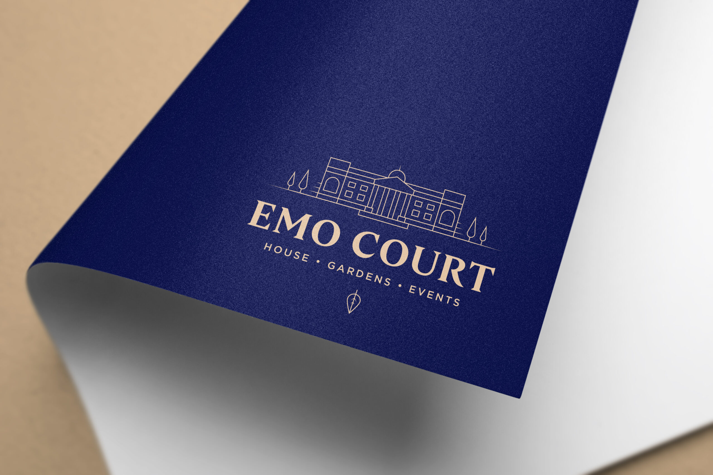
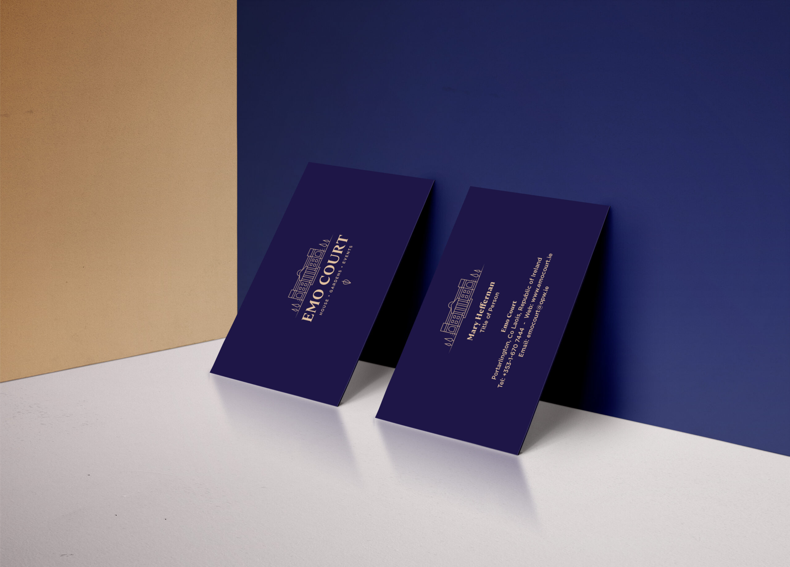
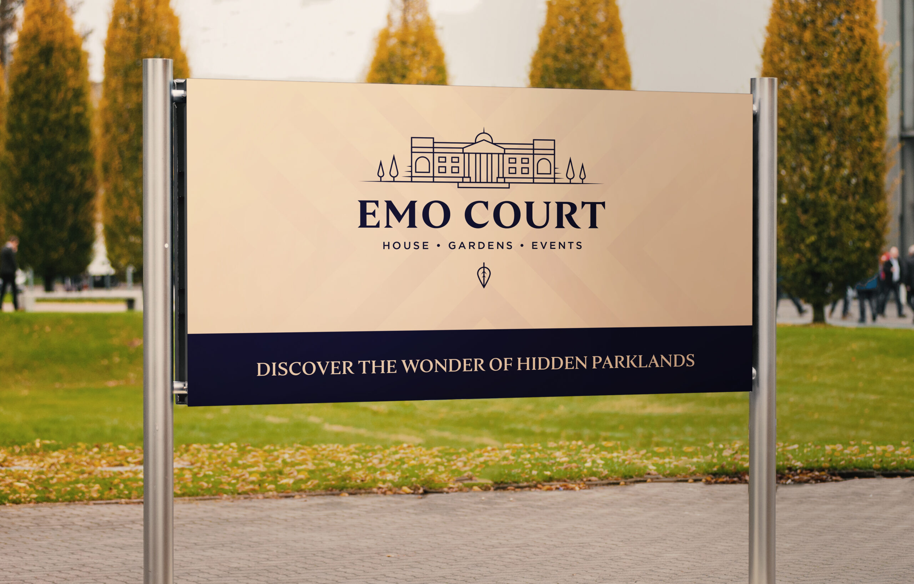

Emo Court
Discover Unique History
Emo Court is a quintessential neo-classical stately home in County Laois, designed by James Gandon in 1790 and gifted to the Irish people in 1994. I developed a contemporary brand identity and online presence to open this heritage destination to new audiences at home and abroad.

Heritage, universally appealing
Most visitors were Irish families, so the strategy was to make the brand visible internationally, to leisure visitors seeking a different experience of Ireland, and to organisations looking for unique venues for events. The identity grew from the estate's history: bold, modern lines echoing the architecture, in harmony with an elegant script, classic and contemporary at once, in a traditional palette with secondary graphics drawn from the estate.

A destination online
Bespoke photography creates an alluring impression of the house, gardens and parkland. The website is simple, informative and easy to navigate, with clearly tabbed sections for planning a visit and following events, supported by traditional promotional collateral.

Tradition thriving
Web traffic rose 150% in the six months after launch with a significantly lower bounce rate, and visitor numbers grew appreciably even through Covid closures, a historic home finding its place as a contemporary leisure destination and venue.